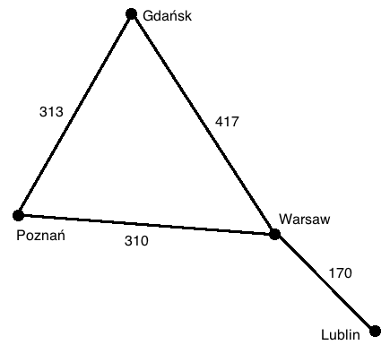

The Graph Data Structure (Advent of Code, Day 9)
December 31, 2015
One of the things I enjoyed most about Advent of Code was how the nature of the problems led one to utilize language features and data structures that are only infrequently used in everyday web development tasks. I had spent a decent portion of the previous month bootstrapping my knowledge of data structures and algorithms, so it was rewarding to be able to look at a problem and say, “Hey, this seems like the perfect place to use a graph.”
Graphs (the data structure, not the things that Excel struggles to generate correctly) will be the topic of this post, the second in a series of posts that use Advent of Code as an entrée to explore technical topics.
What Are Graphs?
Like most modern programming languages, Ruby gives its users lots of built-in data structures, such as arrays, hashes, sets, and queues. So, why bother building a Graph class? That is to say, what makes graphs unique as a data structure?
In contrast to other data structures, where the main goal is convenient storage, searching, and sorting, and the connections between the elements are incidental (a byproduct of their sorted order or order of insertion), in graphs, the connections themselves encode the relevant information. This will become clearer with an example. To the right is a (very) simple map of Poland with four cities represented on it. These cities could be stored in an array, ["Warsaw", "Lublin", "Poznań", "Gdańsk"], but then we miss out on what’s important here—the distances and routes between the cities. The graph data structure optimizes the storage of such “connection-heavy” data.
For my mini-graph, the connections represent kilometers by car between the cities. However, please note, that the connections can represent pretty much anything. For a travel or mapping site, these connections might also represent travel time, price, a quality of travel metric, and other things besides just distance. For a social networking site, the points might symbolize users, whereas a connection between two points encodes a friendship.
Graph Terminology
There are a plethora of terms that are commonly used for the points and lines on a graph. I personally prefer the terms vertices and edges, so I will use these terms below.
Graphs can be weighted or unweighted. In a weighted graph, edges have a particular value associated with them. In an unweighted graph, the edge between any two points is merely present or absent. Graphs can also be directed or undirected. In a directed graph, the edge A→B might not necessarily be the same as the edge B→A (for road maps, think of cases like one-way roads or construction detours; for social networks like Twitter, think of unreciprocated followings). Obviously, in an undirected graph, A→B will always be the same as B→A.
Now that our terminology has been defined, let’s explore how one might a Graph class in Ruby, while keeping in mind that what follows below is just one programmer’s first attempt at doing so.
Building a Graph Class
One of the most interesting decisions that needs to made when constructing a Graph class is choosing how to keep track of the data in the edges. To my knowledge, there are three different “canonical” ways to do this, each with its own pluses and minuses:
- matrix – a matrix M of size n x n can be built with the data at M[x,y] representing either the presence/absence of a connection (unweighted graphs) or the weight of such a connection (weighted graphs); if you’re old enough to remember these things called road altases, they generally contained matrices of distances between major cities
- array + linked lists – the array A holds all the vertices in order, while the value at A[x] holds a linked list that contains all the edges that originate at vertex x; best used for sparsely connected graphs
- pointer-based – each vertex has one or two associated arrays, one that holds pointers to all of the vertex’s neighbors (or nil if no connection is present) and, if necessary, another array containing all the weights
In my Graph class, I opted to use a pointer-based model. I chose to optimize my implementation for graphs with “named” (string-based) vertices and edges that hold a numerical value. Here’s what my Vertex class and beginnings of my Graph class looks like:
class Vertex
attr_accessor :name, :neighbors, :weights
def initialize(name)
@name = name
@neighbors = []
@weights = []
end
end
class Graph
attr_accessor :vertices
def initialize
@vertices = []
end
def add_vertex(name)
@vertices << Vertex.new(name)
end
def find_vertex_by_name(name)
vertices.each do |v|
return v if v.name == name
end
nil
end
def count
vertices.length
end
end
A graph is initialized with an empty array of vertices. Each vertex is instantiated with a name, an empty neighbors array, and an empty weights array. Because of my choice to optimize for working easily with named vertices, I have a method #find_vertex_by_name that can track down a vertex by, well, its name, which is used internally to allow for the convenient invocation of complex graph algorithms using the vertex names as parameters. The #count method is heavily used internally as well, as knowing the total number of vertices is essential for many of the graph algorithms.
The ease of using vertex names for arguments for all the methods of the Graph does come with a cost—it is somewhat clunky and costly to convert the name to the proper index position in the graph’s @vertices instance variable. For example, here’s my #add_edge method, which defaults for use with unweighted and undirected graphs (it will create a matching pair of unweighted edges for A→B and B→A), but can made to create edges for weighted and/or directed graphs by including additional arguments:
class Graph
# ...see above...
def add_edge(start_name, end_name, weight = nil, undirected = true)
from = vertices.index { |v| v.name == start_name }
to = vertices.index { |v| v.name == end_name }
vertices[from].neighbors[to] = true
vertices[from].weights[to] = weight if weight
if undirected
vertices[to].neighbors[from] = true
vertices[to].weights[from] = weight if weight
end
end
end
The first thing the method does is track down the index positions in the graph’s @vertices array corresponding to the names entered as first and second arguments. Then the neighbors array of the starting (“originating”) vertex is updated at the position of the ending vertex to true.
How Ruby is programmed to handle arrays helps here. Say we’ve just added a ninth vertex ("Nine") and tenth vertex ("Ten") to a graph g. Should we want to add an undirected, unweighted edge between the two, it’s as simple as calling: g.add_edge("Nine", "Ten"). The @neighbors array of the ninth vertex will be updated to [nil, nil, nil, nil, nil, nil, nil, nil, nil, true]. When true is assigned to @neighbors[9] (corresponding to the tenth vertex of the graph as Ruby arrays are zero-based), the other array positions are automatically filled with nil. This indicates that the "Nine" vertex has an edge that runs to the tenth vertex, but no other edges.
By default, the #add_edge method will also create an edge that runs in the reverse direction. This can be suppressed by including false as a fourth argument to turn the undirected flag off. Including a weight for the edge(s) created is as simple as including it as a third argument.
What Can We Do With Graphs? – An Overview
This blog post would grow to even more monstrous proportions if I were to describe in detail all the cool stuff it’s possible to do with graphs and analyze the methods I wrote to accomplish these things. Instead I’ll provide a barebones overview of the possibilities of graphs, and refer my reader to my GitHub account for all the implementation details:
- Traversal/Search – Graphs can be traversed (or searched) in either a breadth-first fashion (by using a queue) or a depth-first fashion (by using a stack)
- Shortest Path – The classic algorithm for finding the shortest path between two vertices was envisioned by legendary computer scientist Edsger Dijkstra; theoretically, this can be used for weighted graphs (e.g. to find the shortest distance) and for unweighted graphs too (e.g. to find the minimum number of degrees to Kevin Bacon)
- All Shortest Paths – If we’re interested in finding all the shortest distances between all the vertices on the graph, Floyd’s algorithm does so quicker (in O(n^3) time) than repeatingly calling Dijkstra’s algorithm
- Minimal Spanning Tree – To find the “minimal spanning tree” of an undirected graph, that is, a collection of connected edges with the minimum possible total weight, Prim’s algorithm is one such option
- Traveling Salesman Problem – Lastly, the famously difficult and theoretically important optimization problem, the Traveling Salesman Problem, which tries to find the shortest route whereby a salesman can visit each “city” (vertex) exactly once and then return to his hometown, is best represented by using a graph (the method I’ve written is a rather naïve, brute-force approach that only works effectively up until about 10 vertices on a fully connected graph as the number of possible routes grows at the same speed as does n!)
Advent of Code, Day 9 – The Problem
On the ninth day of Advent of Code, the elves give Santa a list of new locations to visit that includes distances between every pair of locations, and the task of the programmer was to find the shortest route that would visit each and every location exactly once. For Part Two of the problem, Santa, probably a bit drunk on eggnog, decides he’s going to show off and take the longest possible route between all the locations (while visiting each of them exactly once). The lack of concern he shows for his reindeer’s health is frightening, but I guess we can excuse it because Santa grew up in a different era.